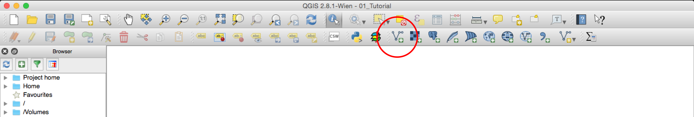
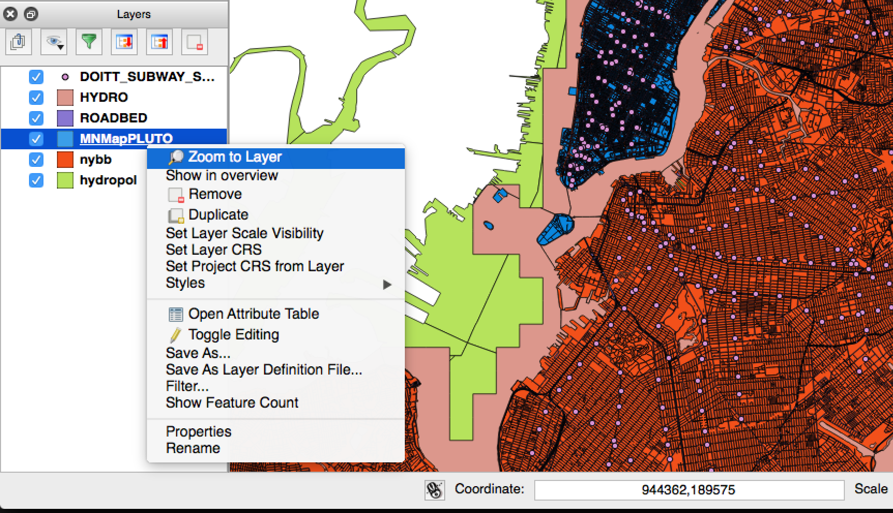
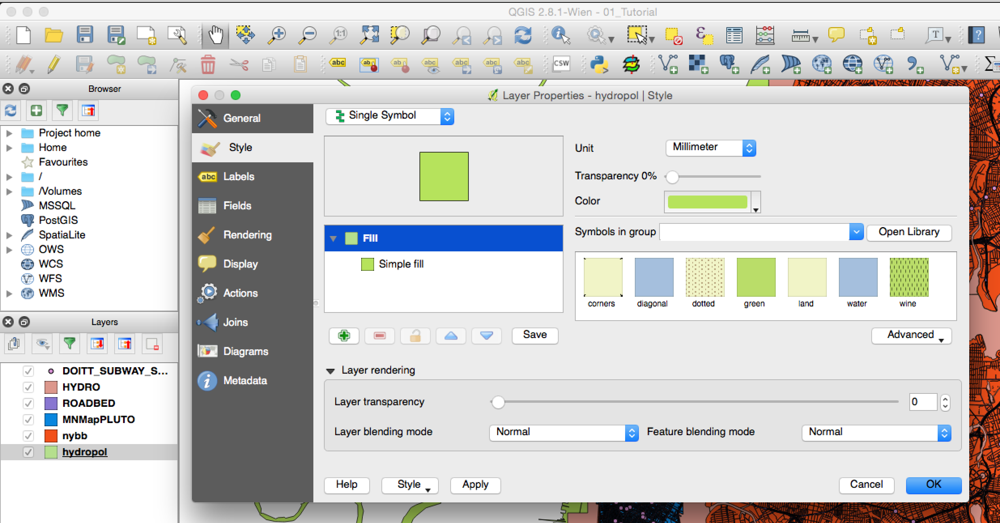
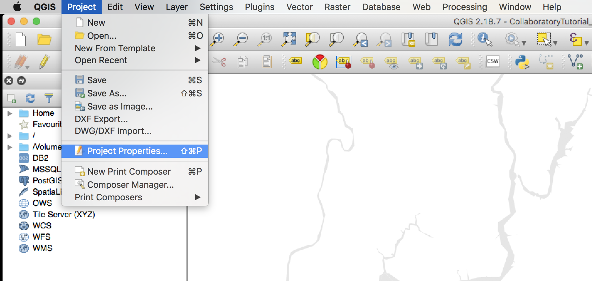
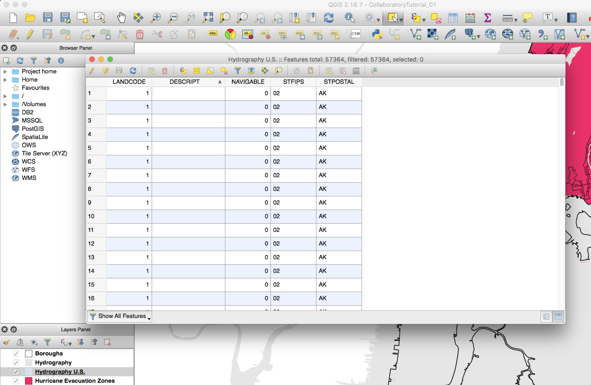
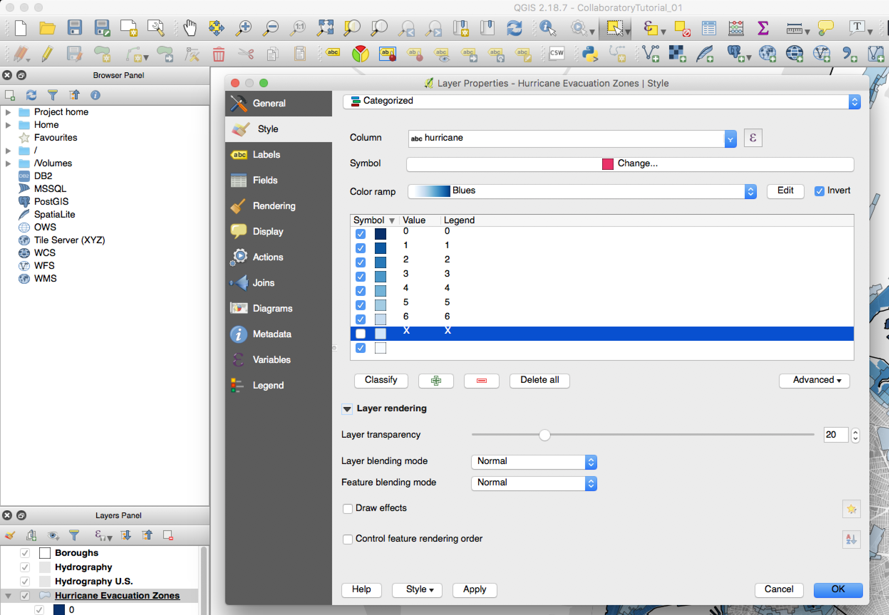
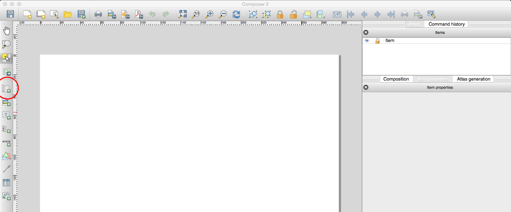
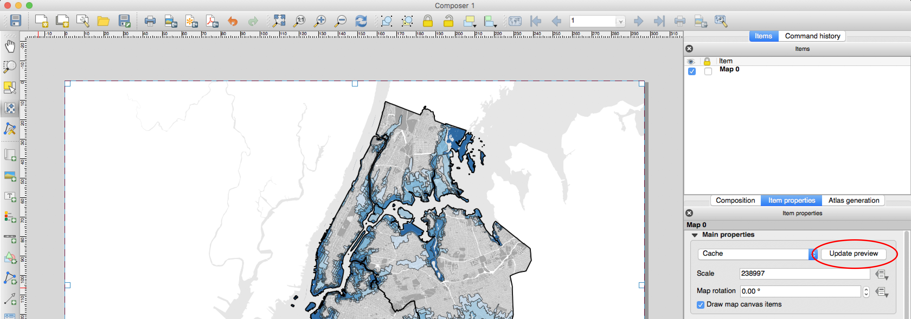
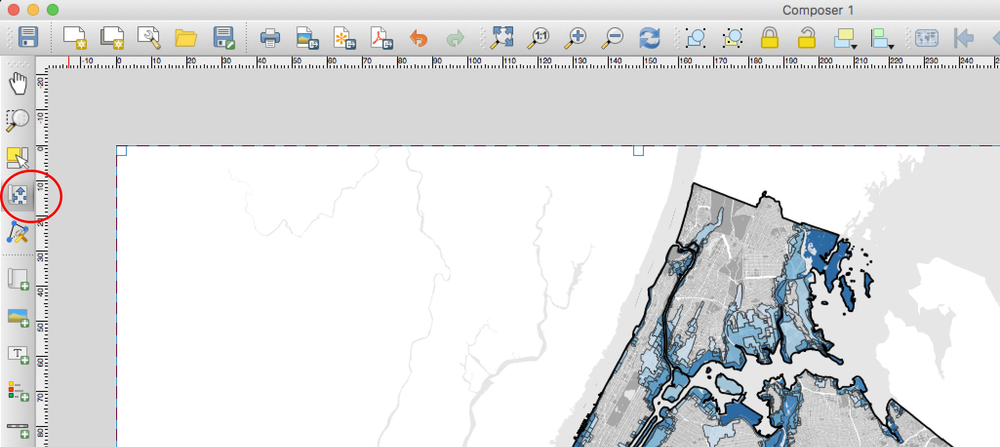
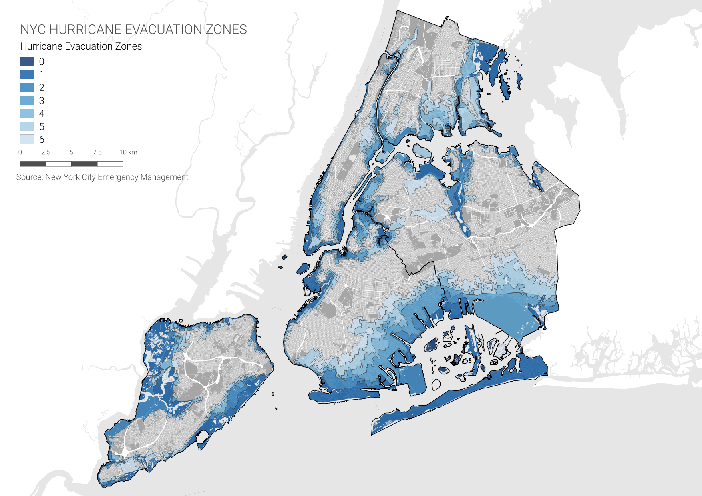

Datasets
To create this map we will be using the following datasets:
Boroughs - New York City boroughs. Download from NYC Planning - Open Data. Choose "Borough Boundaries (Clipped to Shoreline)", under "Borough Boundaries & Community Districts".
MapPLUTO - Manhattan MapPLUTO file (version 16v2), containing all the lots in New York and their attributes. The original PLUTO files can be downloaded from NYC Planning - Open Data. Make sure you download the files for all 5 boroughs. For more information about the PLUTO files and what each of the fields means take a look at the useful PLUTO data dictionary.
Hurricane Evacuation Zones - representing varying threat levels of coastal flooding resulting from storm surge. Download from NYC OpenData. Once you get to the NYC OpenData page, click
Exportand choose theShapefileformat. A brief note about this dataset from NYC OpenData: "Hurricane evacuation zones should not be confused with flood insurance risk zones, which are designated by FEMA and available in the form of Flood Insurance Rate Maps (FIRMs)."Hydrography - New York City hydrography. Download from NYC Open Data. Once you get to the NYC OpenData page, click
Exportand choose theShapefileformat.Hydrography U.S. - United States hydrography. Download from the Bureau of Transportation Statistics. When you get to the Bureau of Transportation Statistics page click on the Hydrographic Features
ZIPfile.States - U.S. State Boundaries. Download from the Bureau of Transportation Statistics. When you get to the Bureau of Transportation Statistics page click on the U.S. State Boundaries
ZIPfile.
A packaged file of the above data can be found at brwn.co/L1D.
Adding Layers
The first step in creating a basic map is to open QGIS and add the layers you downloaded.
To add shapefiles click on the
Add Vector Layerbutton. Other types of data will be added using the other buttons, but in this tutorial we will only be using vector data (shapefiles). Other types of data include rasters, csv (comma separated values), and postGIS layers.

Start by adding the Boroughs layer. The reason we start with this one is because we know it has the right projection for New York City (NAD_1983_StatePlane_New_York_Long_Island_FIPS_3104_Feet). Since map projects will automatically take the projection of the first layer we add, by loading this layer first we make sure we are working with the right one.
Make sure you select the files with the extension
.shp. Remember that a shapefile is actually made up of 5 or 6 individual files with different extensions. Normally, these individual files are the following:.shp - The main file that stores the feature geometry (required).
.shx - The index file that stores the index of the feature geometry (required).
.dbf - The dBASE table that stores the attribute information of features (required).
.sbn and .sbx - The files that store the spatial index of features (these might get corrupted, see note at the end of this tutorial).
.prj - The file that stores the coordinate system information.
For more information on these extensions and others see this explanation by ESRI.
Once you've added all the layers you downloaded, you need to organize them in the layer panel. Remember that the layers will be drawn in the same order they appear in the panel: the top layer will be drawn last, on top of the other ones.
The final order of the layers should be something like this (from top to bottom):
Boroughs
Hydrography
Hydrography U.S. (choose the
hydropol.shpfile.)Hurricane Evacuation Zones
MNMapPLUTO, QNMapPLUTO, BXMapPLUTO, BKMapPLUTO, SIMapPLUTO
States
These layers will probably come with different names but you can rename them by right-clicking on them in the Layers Panel and selecting
Rename.If when you zoom in to one of the layers some of its features disappear see the note at the end of the tutorial.
Basic Symbology
Symbology is one of the most important concepts in mapping.
At its most basic level, symbology stands for changing the color, line weight, size or outline of a layer.
However, and more importantly, it also means changing the appearance of a layer based on one or multiple of its attributes.
In this tutorial we will do both, simple color changes and more advanced symbologies based on attributes.
As you may have seen, QGIS assigns random colors to each of the layers you add. To change the appearance of each layer do the following:
First, since we are interested in creating a flood zone map of New York, you should zoom in into the one of the boroughs layer. To do this, right-click on one of the PLUTO layers and click
Zoom to Layer. This is also very useful when for some reason you've panned away from your layers and you can't find them on your map. Just right-click on any of them and selectZoom to Layerto go back to them.

There are multiple ways of changing the appearance of a layer. The easiest (and simplest) is to double-click on the icon (point, line or polygon) next to the layer name on the layer panel. This brings up the
Styletab in theLayer Propertiespanel. In there you can change the fill (color), stroke weight and fill (outline) and the size of the icon (if using points or icons).

In this panel change the style for the following layers in the following ways (we will leave the Hurricane Evacuation Zones for the end):
Boroughs:
Fill style: No Brush
Outline style: Solid Line
Outline width: 0.25
Hydrography:
Fill: #e6e6e6 (HTML notation)
Outline style: No Pen
Hydrography U.S.:
Fill: #e6e6e6 (HTML notation)
Outline style: No Pen
PLUTO:
Fill: #a6a6a6 (HTML notation)
Outline style: No Pen
State:
Fill: #ffffff (HTML notation)
Outline style: No Pen
To change the appearance of the background, select the
Projectmenu, and in there selectProject Properties. Then, in theGeneraltab you can change theBackground colorto #e6e6e6 (HTML notation).

Definition Queries
You will notice that as the map is, only the Bronx shows the Hurricane Evaluation Zones layer; the other boroughs are shaded in the same color that
we gave the water layers. This is because they are actually covered by the Hydrography U.S. layer. Contrary to what one might think, this layer includes
more than just water, it also includes islands, and since Manhattan, Queens, Brooklyn and Staten Island are in fact islands, they are included in this layer
and shaded as if they were water.
However, this layer also includes a field identifying those features that are actually land, and we can use that
field to filter out (hide) those features.
First, to view the actual data associated with the features, right-click on the Hydrography U.S. layer and choose
Open Attribute Table. Once table opens you will see the following fields:LANDCODE,DESCRIPT,NAVIGABLE,STFIPS, andSTPOSTAL. The field
LANDCODEis the one that will tell us whether a feature is land (1) or water (0).So, to only show the features that have a
LANDCODEvalue of0you need to create adefinition query. To do this, right-click on the Hydrography U.S. layer and chooseProperties. In there, go to theGeneraltab, and at the bottom of the panel click onQuery Builder.In the query builder window you want to build an expression that says that only the fields with a
LANDCODEvalue of0should be shown. To do this, double click onLANDCODEin theFieldspanel so that it appears below where it says "Provide specific filter expression". Next, right there type= 0, so that the whole expression reads"LANDCODE" = 0.Once you click
OKon your definition query panel you should see the Hydrology U.S. features disappear from Manhattan, Queens, Brooklyn and Queens and reveal the Hurricane Evacuation zones for these boroughs.Classification by Categories
Finally, we will symbolize the Hurricane Evacuation Zones layer. However, since we want to differentiate between the different zones, instead of simply symbolizing the layer with one color, we will classify it based on different categories in its attribute table.
First, right-click and open the layer's attribute table. There you will see a field called
hurricanewhich contains a code for each of the six zones. This is the code we will use to symbolize the different evacuation zones. Close the attribute table.Just like for the other layers, right-click on the Hurricane Evacuation Zones layer and choose
Properties. Go to theStyletab. Here, however, chooseCategorizedinstead ofSingle symbolin the drop-down menu at the top.Next, choose the
hurricanefield in theColumnoption.Click on
Classifyto classify the data and display the different values. Here, QGIS goes through all the values in the attribute table for that particular field and assigns a color to each one of them. The default color assignment is random.Change the
Color rampto one of the ones that has a gradient and click on theInvertoption to assign the darkest color to the lowest value.Now, deactivate the
Xcategory, since this one is actually not an evacuation zone.Finally, let's apply some transparency to the layer so you can see the blocks under the evacuation zones. To do this slide the
Layer transparencyslider to 20%.

Click
OKto close the properties panel.
Print Composer
The Print Composer is where you will format your map for its final output. Here you will specify the output size, you will add a legend, a scale bar, a north arrow (if needed) and any additional text (titles, sources, explanations and credits). Although the Print Composer exists as its own window it will still be linked to the map Project we have been working on.
First, create a new Print Composer in
Project,New Print Composer. Give it a custom name if you want, although this is not necessary.Once you are in the Print Composer you need to add a new map. Think of it as if you had a blank piece of paper and you were adding a window onto the map you've been working on. That window is a link to your Project and if you change things in the Project those changes will still be reflected in the Print Composer.
To add a new map, click on the button
Add new mapon the left-hand panel and draw a rectangle on the blank page.

Once you add the map you can adjust its size and position by dragging it from its corners.
You might notice that if you change the size of the map it doesn't necessarily update. To avoid this, on the right-hand panel, where it says
Main properties, click onUpdate preview. Or, you can also click on the drop-down menu where it saysCacheand change it toRenderso that it is constantly updating. For this map, though, since we are working with pretty large layers (ie. PLUTO) leave it on theCacheoption.

To move the content inside the Print Composer (as opposed to the whole page) use the
Move item contenttool on the left-hand panel.

Next, you need to center and zoom in the map on the area you want to focus on. For the purposes of this tutorial, we will include the 5 boroughs. To do this, move the content of the map to this area and on the right-hand panel, under
Main properties, adjust yourScaleto 230,000.If any of the colors or line weights seem too big or two small or not correct, you can always go back to the Project and change them there. When you return to your Print Composer you can update your preview and the changes will be reflected.
Add a scale bar by going to
LayoutAdd scalebarand clicking on the map.The default scale bar is too big and has some values left of the zero. To change this, go to the right-hand panel, in the top part make sure you select the
scale bar, and in the Segments section change theSegmentsto 'left 0'.You can also adjust the
Heightof the scale bar to 2mm.Under Fonts and colors change the values to:
Font color: #4d4d4d
Fill color: #4d4d4d
Stroke color: #4d4d4d
Inside the
Fontmenu you can choose a different font and/or a smaller size.To add a legend click on
LayoutAdd legendand then click on the map. You will notice that QGIS automatically puts an icon for every layer in the map. We only need the ones for the Hurricane Evacuation Zones, so we need to customize the legend:On the right-hand panel, under Legend items uncheck
Auto updateand then select the layers that you don't want in the legend and remove them with the 'minus' button. Do the same thing inside the Hurricane Evaluation Zones layer with the categories you don't want to display.Under
Main properties, remove the 'Legend' in theTitlefield.Also, further down, uncheck the
Backgroundoption.Since we did not rotate the map we don't need to add a north arrow. If you rotate your map you must add a north arrow. If you wanted to, you could add a north arrow by clicking on
LayoutAdd arrow.Finally, to add a title and a 'source' text, click on the
Add new labelbutton on the left-hand panel and click on the map. Customize these labels by changing their color, size and location.The last step is to export the map as a .pdf file. Use the
Export as PDFbutton on the top toolbar and save your map.Your final map should look something like this:

Note
If, after adding some dataset, you zoom in and some of the features disappear, you probably need to rebuild the dataset's "Spatial Index". To do this right-click on the layer, select
Propertiesand go toGeneral. UnderCoordinate reference systemclick onCreate spatial index. This should solve your problem. Sometimes, specially with the New York City PLUTO files, the "Spatial Index" is tied to one of the attribute fields and when you zoom in only the features with that specific attribute show up. "Spatial Index" are specially useful when doing operations over large datasets, for example see this post.